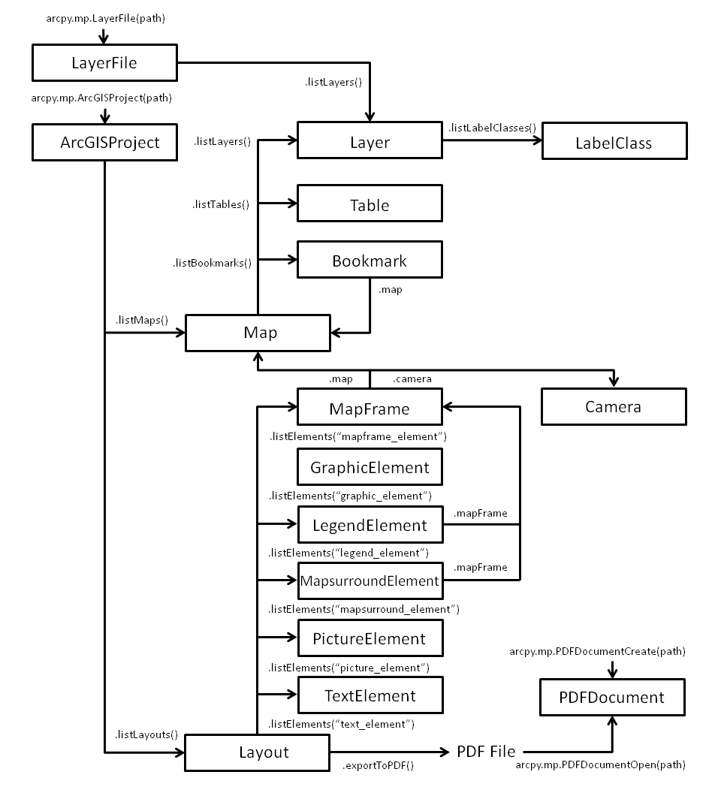

Migrating from arcpy.mapping to ArcGIS Pro
Arcpy.mapping scripts authored with ArcGIS Desktop must be modified before you can run them in ArcGIS Pro. The changes are straightforward and typically can be accomplished with find and replace operations. The sections below highlight many of the significant changes to the arcpy.mp API as well as new features.
Python 3
ArcGIS Pro uses Python 3. You may need to modify some standard Python syntax. For more information, see Python migration from 10.x to ArcGIS Pro.
Arcpy.mapping is now arcpy.mp
The changes introduced with ArcGIS Pro were significant enough to merit a module name space change. The new name provides more flexibility in terms of the arcpy.mp capabilities. For example, in addition to map automation, arcpy.mp also provides project-level management and the ability to create objects, which wasn't possible in arcpy.mapping.
The ArcGIS Pro project file (.aprx)
The first and most obvious change is that arcpy.mp in ArcGIS Pro needs to reference a project file (.aprx) rather than a map document (.mxd). Therefore, you need to replace arcpy.mapping.MapDocument(mxd_path) with arcpy.mp.ArcGISProject(aprx_path). The ArcGISProject function now returns an ArcGISProject object, which is a main entry point for most arcpy.mp automation needs. The ArcGISProject class also has an importDocument method that allows you to automate the importing of map (.mxd), globe (.3dd), scene (.sxd), and other document files into a project.
Many of the list functions have moved
Many of the stand-alone arcpy.mapping List functions are now methods on the appropriate objects. This design change removed the need to continually reference the map document as the first parameter, and the new organization has a better object-oriented flow. The following examples demonstrate how List functions are used to reference a layer's label classes. They are similar in terms of functionality but require changes to your existing ArcGIS Desktop scripts.
This sample demonstrates how to reference a layer's label classes using ArcGIS Desktop.
mxd = arcpy.mapping.MapDocument("CURRENT")
df = arcpy.mapping.ListDataFrames(mxd, "Yosemite National Park")[0]
for lyr in arcpy.mapping.ListLayers(mxd, df):
if lyr.supports("SHOWLABLES"):
lblClasses = lyr.labelClasses
This sample demonstrates how to reference a layer's label classes using ArcGIS Pro.
p = arcpy.mp.ArcGISProject("CURRENT")
m = p.listMaps("Yosemite National Park")[0]
for lyr in m.listLayers():
if lyr.supports("SHOWLABELS"):
lblClasses = lyr.listLabelClasses()
The following diagram displays some of the most common classes that are part of arcpy.mp and the location and name of the functions or properties needed to reference a particular class. The diagram is only an example and does not display a complete set of objects. The two main entry points to the objects are either through the ArcGISProject class or the LayerFile class.
 |
Export functions have moved
The stand-alone export functions are now methods on the Layout, MapFrame, MapSeries, and MapView objects. The design change separates the different sets of parameters that are available depending on the object being exported. For example, when you're exporting a map view, you need to be specify width and height but with a layout, the size is automatically taken into account.
Layer management functions have moved
The stand-alone layer management functions are now methods on the Map and LayerFile objects. Some of those methods include addLayer, addLayerToGroup, insertLayer, moveLayer, and removeLayer.
Layer files have changed
Layer files authored with ArcGIS Desktop have an .lyr extension, and layer files created with ArcGIS Pro have an .lyrx extension. There is a notable difference. Older .lyr files only store a single layer or a single group layer at the root level, although a group layer can have multiple layers or group layers within it. Newer .lyrx files can store multiple layers and group layers at the root level. A reference to an .lyrx can now be a reference to either a single layer or a list of layers. Newer .lyrx files can also include stand-alone tables. Individual stand-alone tables can also be exported to .lyrx files.
New Camera, Map, MapFrame, and MapView objects replace the role of the data frame
The ArcGIS Pro framework has introduced capabilities that affect how you interact with map displays and, therefore, new objects are being introduced. These new Camera, Map, MapFrame, and MapView objects each serve a specific role and are integrated with one another and, as a result, you have more control for different scenarios.
A Map object in ArcGIS Pro represents a collection of tabular and symbolized geographic layers and also persists information such as coordinate system, default views of the data, and various other metadata. The only way to visualize the contents of a map is in a map view, as a tab in the application with its own table of contents, or in a map frame on a page layout. The same map can be displayed in multiple map views or map frames. If a layer is added to a map, all map views and map frames that reference that map will display the added layer. If you want a different collection of layers or tables to be displayed in different views, you will need to build and use different maps.
A MapFrame object is a Layout element that displays the geographic information added to a Map. It also controls the size and positioning of the map frame on a layout. More than one map frame can reference the same map. Similarly, a MapView object is a way to view the contents of a map.
ArcGIS Pro integrates 2D and 3D display, and the Camera object is used to control both the scale and extent of 2D maps and the camera position for 3D maps in a map frame.
A new Layout object
An ArcGIS Pro project supports multiple layouts. As a result, a new Layout object was added, and layouts can be referenced using the listLayouts method on the ArcGISProject object. Each layout can have different page sizes and orientations. Similar to ArcGIS Desktop, you can get to the individual layout elements using the listElements method. Each of these elements has a visible property that allows you to turn off an element rather than moving it off the page.
The application always refreshes when using CURRENT
When you use the CURRENT keyword in the Python window with ArcGIS Desktop, you sometimes had to call refreshActiveView to force a screen refresh. This is no longer the case with ArcGIS Pro. All arcpy.mp API changes directly update ArcGIS Pro.
Updating data sources has changed
The methods and parameters for changing a layer's or table's data source has changed. The improved design allows for better management of database connections and other data sources that may be joined or related. For more information, see Updating and fixing data sources.
Objects can be created
Previously with ArcGIS Desktop, scripts were limited to automating existing elements. Starting with ArcGIS Pro 3.2, many common objects can be created. This includes the createMap and createLayout methods on the ArcGISProject object as well as many of the layout element constructors such as createMapFrame, createMapSurroundElement, createGraphicElement, createTextElement, and more. It is also possible to create Bookmark objects from the Map class. For more information, refer to the ArcGISProject, Layout, and Map class topics.